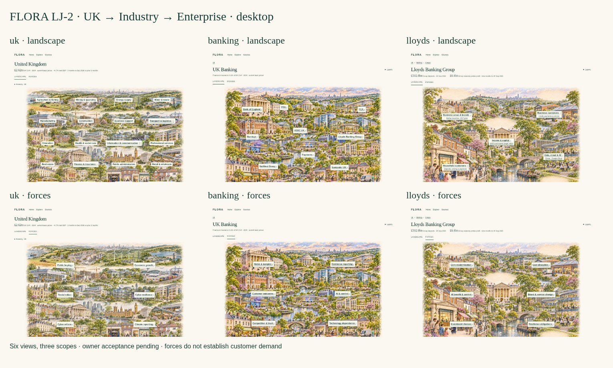

UK → Industry → Enterprise
LANDSCAPE | FORCES · design review pending
Open LJ-2 prototype · Download demo · Review and evidence

LANDSCAPE | FORCES · design review pending
Open LJ-2 prototype · Download demo · Review and evidence
